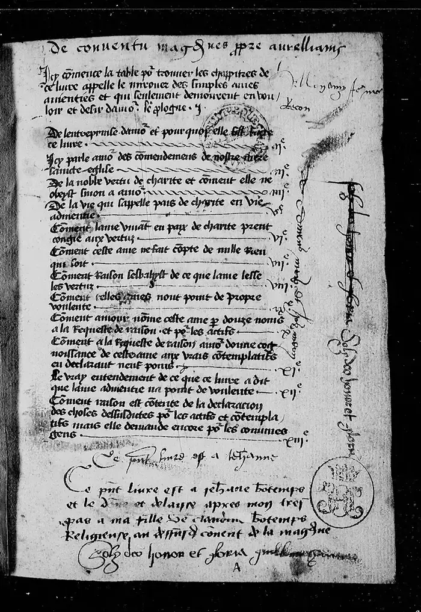
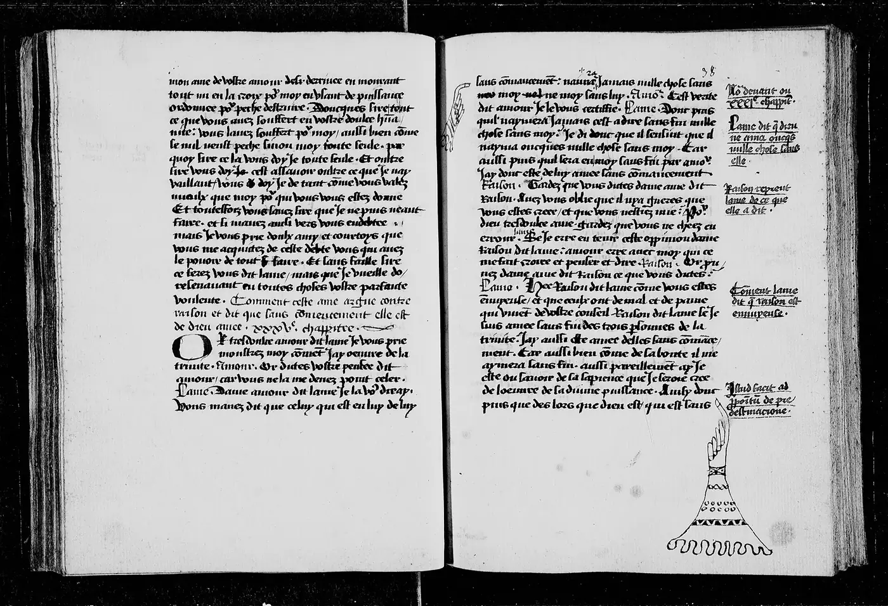

Quem foi Marguerite PoreteWho was Marguerite Porete
Marguerite Porete nasceu por volta de 1250, provavelmente no condado de Hainaut, uma região de língua francesa entre a França e o Sacro Império. Quase tudo o que sabemos dela vem dos autos do processo que a condenou, escritos por quem queria calá-la. Ainda assim, o retrato que sobra é claro. Era uma mulher muito instruída e uma beguina, ou seja, uma das mulheres que viviam a fé de forma livre, sem votos de convento e sem marido, trabalhando, estudando e cuidando dos outros. E era, sobretudo, uma escritora que teve a ousadia de pensar o sagrado com a própria cabeça.
Marguerite Porete was born around 1250, probably in the County of Hainaut, a French-speaking land between France and the Holy Roman Empire. Almost everything we know about her comes from the records of the trial that condemned her, written by the people who wanted to silence her. Even so, the portrait that remains is clear. She was a highly educated woman and a beguine, one of the women who lived their faith freely, without convent vows and without a husband, working, studying and caring for others. Above all, she was a writer who dared to think about the sacred with her own mind.
- c. 1250c. 1250Nasce, provavelmente no condado de HainautBorn, probably in the County of Hainaut
- década de 12901290sEscreve O Espelho das Almas Simples, em francês antigoWrites The Mirror of Simple Souls in Old French
- 1296–13061296–1306O bispo de Cambrai manda queimar o livro em ValenciennesThe Bishop of Cambrai has the book burned in Valenciennes
- 13081308Presa e entregue ao inquisidor Guilherme de ParisArrested and handed to the inquisitor William of Paris
- abr. 1310Apr 131021 teólogos de Paris condenam 15 artigos do livro21 Paris theologians condemn 15 articles from the book
- 1º jun. 13101 Jun 1310Queimada viva na Place de Grève, em ParisBurned alive at the Place de Grève, Paris
- 1311–13121311–1312Concílio de Vienne: decreto Ad nostrum contra beguinas e begardosCouncil of Vienne: decree Ad nostrum against beguines and beghards
- 19271927O livro é impresso em inglês como de um “místico desconhecido”The book is printed in English as by an “unknown mystic”
- 19461946Romana Guarnieri devolve o nome de Marguerite ao livroRomana Guarnieri restores Marguerite’s name to the book
- 19651965Primeira edição do texto em francês médio (manuscrito de Chantilly)First edition of the Middle French text (Chantilly manuscript)
O livro: O Espelho das Almas SimplesThe book: The Mirror of Simple Souls

Na década de 1290, ela escreveu em francês antigo, a língua do povo, e não em latim, a língua do clero, um livro chamado O Espelho das Almas Simples e Aniquiladas, que permanecem somente na vontade e no desejo do Amor. É um diálogo entre personagens: a Alma, o Amor e a Razão. A Alma atravessa sete estados até se desfazer de tudo o que é só seu: a vontade própria, o orgulho, até o medo. Então ela se torna transparente, como um espelho, para o amor divino. Marguerite chama isso de aniquilação. Não é a morte da pessoa, é o fim da prisão do ego. Uma alma assim, escreveu ela, já não vive pelo medo do castigo nem pela troca de favores com o céu. Vive livre, porque ama. Para o poder daquele tempo, essa liberdade era o perigo: uma alma que encontra Deus pelo amor já não depende de intermediários.
In the 1290s she wrote, in Old French, the language of the people, and not in Latin, the language of the clergy, a book called The Mirror of Simple Annihilated Souls, who remain only in will and desire of Love. It is a dialogue between characters: the Soul, Love and Reason. The Soul passes through seven stages until it lets go of everything that is only its own: self-will, pride, even fear. Then it becomes transparent, like a mirror, to divine love. Marguerite calls this annihilation. It is not the death of the person; it is the end of the ego's prison. Such a soul, she wrote, no longer lives out of fear of punishment or by bargaining with heaven. It lives free, because it loves. For the powers of that time, this freedom was the danger: a soul that finds God through love no longer depends on intermediaries.
O processoThe trial
Entre 1296 e 1306, o bispo de Cambrai, Gui de Colmieu, condenou o livro e mandou queimá-lo em praça pública, em Valenciennes, diante dela, proibindo que ela o divulgasse. Marguerite não obedeceu. Mostrou o texto a três religiosos, entre eles Godofredo de Fontaines, mestre de teologia em Paris, que o aprovaram. Por volta de 1308, foi presa e entregue ao inquisidor da França, o dominicano Guilherme de Paris, confessor do rei Filipe, o Belo, e o mesmo inquisidor do processo contra os Templários. Ficou cerca de um ano e meio presa em Paris. Recusou o juramento exigido e não respondeu aos inquisidores. Sem poder interrogá-la, eles puseram o livro no banco dos réus. Tiraram dele quinze frases, os chamados artigos, e em abril de 1310 vinte e um teólogos da Universidade de Paris os declararam heréticos. O primeiro artigo dizia que a alma aniquilada se despede das virtudes. Hoje, só três dos quinze artigos são identificados com segurança. Por ter voltado a divulgar um livro já condenado, ela foi declarada herege relapsa.
Sometime between 1296 and 1306, the Bishop of Cambrai, Guy of Colmieu, condemned the book and had it burned in public in Valenciennes, in front of her, forbidding her to spread it. Marguerite did not obey. She showed her text to three churchmen, among them Godfrey of Fontaines, a master of theology in Paris, who approved it. Around 1308 she was arrested and handed over to the Inquisitor of France, the Dominican William of Paris, confessor to King Philip the Fair and the same inquisitor who led the case against the Templars. She spent about a year and a half in prison in Paris. She refused the required oath and would not answer the inquisitors. Unable to question her, they put the book itself on trial. They drew fifteen sentences from it, the so-called articles, and in April 1310 twenty-one theologians of the University of Paris declared them heretical. The first article said that the annihilated soul takes leave of the virtues. Today only three of the fifteen articles can be securely identified. Because she had spread a book that was already condemned, she was declared a relapsed heretic.
A fogueiraThe fire
No dia primeiro de junho de 1310, na Place de Grève, em Paris, onde hoje fica a praça da Prefeitura, Marguerite Porete foi queimada viva. O homem que se apresentou como seu defensor, o beguino Guiard de Cressonessart, confessou sob pressão e foi condenado à prisão perpétua. Ela não se retratou. A continuação da crônica de Guillaume de Nangis, escrita por quem não tinha simpatia por ela, registrou que ela enfrentou a morte com tanta calma que a multidão chorou. Queimaram a mulher. Não conseguiram queimar o que ela havia compreendido.
On the first of June 1310, at the Place de Grève in Paris, where the City Hall square stands today, Marguerite Porete was burned alive. The man who had declared himself her defender, the beghard Guiard de Cressonessart, confessed under pressure and was sentenced to life in prison. She did not recant. The continuation of the chronicle of Guillaume de Nangis, written by people who had no sympathy for her, recorded that she faced death so calmly that the crowd was moved to tears. They burned the woman. They could not burn what she had understood.
Depois do fogo: o livro sem nomeAfter the fire: the nameless book

O livro sobreviveu sem o nome dela. Foi copiado e traduzido para o latim, o italiano e o inglês médio, e circulou pela França, Itália, Alemanha, Inglaterra e Boêmia, lido por monges e freiras que não sabiam que liam uma mulher condenada. Chegou a ser atribuído a outros autores. Em 1927 foi impresso em inglês como obra de um místico francês desconhecido. Só em 1946 a historiadora italiana Romana Guarnieri reconheceu, em manuscritos latinos da Biblioteca Vaticana, o livro de Marguerite Porete. Seiscentos e trinta e seis anos depois da fogueira, ela recuperou o próprio nome.
The book survived without her name. It was copied and translated into Latin, Italian and Middle English, and it travelled through France, Italy, Germany, England and Bohemia, read by monks and nuns who did not know they were reading a condemned woman. It was even credited to other authors. In 1927 it was printed in English as the work of an unknown French mystic. Only in 1946 did the Italian historian Romana Guarnieri recognise, in Latin manuscripts in the Vatican Library, the book of Marguerite Porete. Six hundred and thirty-six years after the fire, she got her name back.
As palavras dela (citações reais)Her own words (real quotations)
Trechos do livro no francês médio do manuscrito de Chantilly (transcrição do Wikisource) e na tradução inglesa medieval do tradutor “M. N.”, publicada por Clare Kirchberger em 1927 (domínio público nos EUA). A versão em português é uma tradução livre deste site.Passages in the Middle French of the Chantilly manuscript (Wikisource transcription) and in the medieval English translation by “M. N.”, published by Clare Kirchberger in 1927 (public domain in the US).
Vertuz, je prens congé de vous a tousjours. Je en auray le cueur plus franc et plus gay.
“Virtues, I take leave of you for evermore. Now shall mine heart be more free and more in peace than it hath been before.” — Kirchberger (ed.), 1927, Div. 3, cap. 3, p. 11
“Virtudes, eu me despeço de vocês para sempre. Meu coração ficará mais livre e mais alegre.” (tradução livre deste site)
Je suis dieu dit amour, car amour est dieu, et dieu est amour, et ceste ame est dieu par condicion d’amour.
“I am God,” saith Love. “For Love is God and God is Love; and this soul is God by condition of love.” — Kirchberger (ed.), 1927, Div. 4, cap. 1, p. 64
“Eu sou Deus, diz o Amor, pois o Amor é Deus e Deus é Amor, e esta alma é Deus por condição de amor.” (tradução livre deste site)
Adonc est ceste ame acomparagée a l’aigle, pource que ceste ame vole hault, et tres hault, mais encore plus hault que nulz aultre oyseaux, car elle est empenée de fine amour.
“This is the eagle that flieth high; so right high and yet more high than doth any other bird, for she is feathered with fine love, and she beholdeth above others the beauty of the sun.” — Kirchberger (ed.), 1927, Div. 4, cap. 1, pp. 64–65
“Esta alma é comparada à águia, porque voa alto, muito alto, e ainda mais alto que qualquer outra ave, pois está emplumada de amor fino.” (tradução livre deste site)
Se ela pudesse falarIf she could speak
TEXTO IMAGINADO EM HOMENAGEMIMAGINED TRIBUTE TEXT
Estas não são palavras reais de Marguerite. É um monólogo escrito por este site, inspirado nos temas do livro dela: a alma livre, o amor sem medo, a despedida das “virtudes” impostas e a imagem da águia (cap. 22).These are not Marguerite’s real words. It is a monologue written by this site, inspired by the themes of her book: the free soul, love without fear, taking leave of imposed “virtues”, and the image of the eagle (ch. 22).
Eu sou Marguerite. Não tenho retrato; ninguém pintou o meu rosto. De mim guardaram apenas as acusações. Mas eu deixei um espelho. Escrevi na língua da minha gente, porque o amor não precisa de latim para ser entendido. Disseram que uma mulher não podia falar das coisas de Deus. Eu não quis falar por Deus: deixei que o Amor falasse em mim. Queimaram o meu livro diante dos meus olhos, em Valenciennes. Eu o escrevi de novo, e ele continuou a andar. No meu livro, a Alma se despede do medo, da troca e da vaidade de se achar justa. Ela se esvazia até não restar nada que possa ser ameaçado. Por isso, quando me exigiram o juramento, eu me calei. Quem eles queriam ouvir, eu já não era. Escrevi que a alma livre é como a águia, que voa mais alto do que todas as aves e olha de frente a beleza do sol. Diante do fogo, eu olhei para o sol. Não guardem de mim a dor. Guardem a pergunta: quem pode trancar uma consciência? Eu me chamo Marguerite, e com o meu nome falam milhares que não puderam terminar a sua frase. Terminem por nós. Pensem livres. Amem sem medo.
I am Marguerite. I have no portrait; no one ever painted my face. All they kept of me were the accusations. But I left a mirror. I wrote in the language of my people, because love needs no Latin to be understood. They said a woman could not speak of the things of God. I did not try to speak for God: I let Love speak in me. They burned my book before my eyes, in Valenciennes. I wrote it again, and it kept on walking. In my book, the Soul takes leave of fear, of bargaining, of the vanity of thinking itself righteous. It empties itself until nothing is left that can be threatened. That is why, when they demanded my oath, I kept silent. The one they wanted to hear, I no longer was. I wrote that the free soul is like the eagle, which flies higher than every other bird and looks straight at the beauty of the sun. Before the fire, I looked at the sun. Do not keep my pain. Keep the question: who can lock up a conscience? My name is Marguerite, and through my name speak thousands who could not finish their sentence. Finish it for us. Think freely. Love without fear.
Memorial: as vozes apagadasMemorial: the silenced voices
Marguerite não foi a única. Os historiadores estimam que a Inquisição espanhola processou cerca de cento e cinquenta mil pessoas e entregou à morte entre três mil e cinco mil. A Inquisição portuguesa, que também agiu no Brasil, queimou vivas pelo menos mil cento e setenta e cinco pessoas, segundo o historiador Henry Charles Lea. Entre as suas vítimas estava o dramaturgo carioca Antônio José da Silva, executado em Lisboa em 1739. E na grande caça às bruxas da Europa, movida por tribunais religiosos e também civis, católicos e protestantes, entre quarenta mil e sessenta mil pessoas foram executadas, a maioria mulheres. Por trás de cada número há um nome, um rosto e uma voz que foi apagada. Esta página é para todas elas.
Marguerite was not the only one. Historians estimate that the Spanish Inquisition prosecuted about one hundred and fifty thousand people and sent between three thousand and five thousand to their deaths. The Portuguese Inquisition, which also reached Brazil, burned at least one thousand one hundred and seventy-five people alive, according to the historian Henry Charles Lea. Among its victims was the Rio-born playwright Antônio José da Silva, executed in Lisbon in 1739. And in Europe's great witch hunts, driven by church courts and also by secular courts, Catholic and Protestant alike, between forty thousand and sixty thousand people were executed, most of them women. Behind every number there is a name, a face and a voice that was erased. This page is for all of them.
mortos pela Inquisição espanhola (c. 150 mil processados, 1478–1834)
executed by the Spanish Inquisition (c. 150,000 prosecuted, 1478–1834)
Kamen; Cárcel; Dedieu — via Wikipediaqueimados vivos pela Inquisição portuguesa (1540–1794) + 633 em efígie; 29.590 punidos
burned alive by the Portuguese Inquisition (1540–1794) + 633 in effigy; 29,590 punished
Henry Charles Leaexecutados nas caças às bruxas na Europa (c. 1400–1775), por tribunais religiosos e civis; 75–85% mulheres
executed in Europe’s witch hunts (c. 1400–1775), by church and secular courts; 75–85% women
consenso acadêmico (Levack e outros) — via Wikipediamortos nas prisões, sob tortura ou sem registro — número desconhecido
died in prison, under torture or unrecorded — number unknown
os próprios historiadores avisam que os números são mínimos- Marguerite Porete1310 · Parisescritora, beguinawriter, beguine
- Jan Hus1415 · Constançareformador, condenado pelo Concílio de Constançareformer, condemned by the Council of Constance
- Joana d’Arc1431 · Rouenjulgada por tribunal eclesiástico com inquisidortried by a church court with an inquisitor
- Giordano Bruno1600 · Romafilósofo, Inquisição romanaphilosopher, Roman Inquisition
- Antônio José da Silva, “o Judeu”1739 · Lisboadramaturgo nascido no Rio de Janeiro, Inquisição portuguesaRio-born playwright, Portuguese Inquisition
- Cayetano Ripoll1826 · Valênciaprofessor, última execução por heresia na Espanhaschoolteacher, last execution for heresy in Spain
- Milhares sem nomeséculosmulheres acusadas de bruxaria, conversos, “hereges”, livres-pensadoreswomen accused of witchcraft, conversos, “heretics”, free thinkers
Acenda uma velaLight a candle
Por Marguerite e por cada pessoa silenciada por pensar diferente. A sua vela fica guardada neste aparelho.For Marguerite and for everyone silenced for thinking differently. Your candle is kept on this device.
0 velas acesas por vocêcandles lit by you
Reflexão: a chama que não se apagaReflection: the flame that does not go out
A história de Marguerite faz uma pergunta a cada um de nós: quem tem o direito de decidir o que você pode pensar, ler, escrever e sentir sobre o sagrado? Durante séculos, instituições que diziam falar em nome de Deus usaram o medo, o fogo e o silêncio para controlar consciências. Não é preciso desprezar quem crê para reconhecer isso; muitos fiéis sinceros também foram vítimas. O que se denuncia aqui é o dogma armado de poder, a ideia de que a verdade precisa de carcereiros. A liberdade de consciência, de pensamento e de conhecimento não caiu do céu. Foi conquistada com vidas como a dela. Cada vez que alguém pensa por si, pergunta sem medo e compartilha o que aprendeu, a chama de Marguerite continua acesa. Não como fogueira, mas como luz.
Marguerite's story asks each of us a question: who has the right to decide what you may think, read, write and feel about the sacred? For centuries, institutions that claimed to speak in the name of God used fear, fire and silence to control consciences. You do not have to look down on believers to recognise this; many sincere believers were victims too. What is denounced here is dogma armed with power, the idea that truth needs jailers. Freedom of conscience, of thought and of knowledge did not fall from the sky. It was won with lives like hers. Every time someone thinks for themselves, asks without fear and shares what they have learned, Marguerite's flame stays alight. Not as a pyre, but as a light.
O livro: baixe o originalThe book: download the original
Traduções modernas (protegidas por direito autoral, apenas como referência, sem arquivos): Ellen L. Babinsky, The Mirror of Simple Souls (Paulist Press, 1993); E. Colledge, J. C. Marler e J. Grant (Notre Dame, 1999); edição crítica de Romana Guarnieri e Paul Verdeyen (Brepols, Corpus Christianorum, 1986); e traduções para o português publicadas no Brasil.Modern translations (copyrighted, listed only as references, no files): Ellen L. Babinsky, The Mirror of Simple Souls (Paulist Press, 1993); E. Colledge, J. C. Marler and J. Grant (Notre Dame, 1999); critical edition by Romana Guarnieri and Paul Verdeyen (Brepols, Corpus Christianorum, 1986).
FontesSources
- “Marguerite Porete” e “The Mirror of Simple Souls”, Wikipedia (en), consultadas em 15/11/2026 — link, link.
- Bernard McGinn, The Flowering of Mysticism: Men and Women in the New Mysticism (1200–1350), Crossroad, 1998, pp. 244–265.
- Ellen L. Babinsky, introdução a Marguerite Porete, The Mirror of Simple Souls, Paulist Press, 1993.
- Paul Verdeyen, “Le procès d’inquisition contre Marguerite Porete et Guiard de Cressonessart (1309–1310)”, Revue d’histoire ecclésiastique 81 (1986), pp. 47–94.
- Sean L. Field, The Beguine, the Angel, and the Inquisitor: The Trials of Marguerite Porete and Guiard of Cressonessart, University of Notre Dame Press, 2012.
- Michael A. Sells, Mystical Languages of Unsaying, University of Chicago Press, 1994, p. 117 (a crônica de Nangis e a comoção da multidão).
- Sylvain Piron, “Marguerite in Champagne”, Journal of Medieval Religious Cultures 43/2 (2017), pp. 135–156 (a prisão em 1308).
- Romana Guarnieri, “Il movimento del Libero Spirito”, Archivio italiano per la storia della pietà 4 (1965), pp. 501–708 (identificação de 1946 e primeira edição do texto francês).
- Clare Kirchberger (ed.), The Mirror of Simple Souls, by an unknown French mystic of the thirteenth century, trad. “M. N.”, Burns Oates & Washbourne / Benziger, 1927 — Internet Archive.
- Le Miroir des simples âmes, Chantilly, Bibliothèque du musée Condé, MS 157 — Wikisource; Wikimedia Commons.
- Henry Kamen, The Spanish Inquisition: A Historical Revision, Yale University Press (4ª ed., 2014); e “Spanish Inquisition”, Wikipedia (en) — estimativa de c. 150 mil processados e 3.000–5.000 executados (Cárcel, Dedieu).
- Henry Charles Lea, A History of the Inquisition of Spain (1906–1907), citado em “Portuguese Inquisition”, Wikipedia (en) — 1.175 queimados vivos, 633 em efígie e 29.590 punidos (1540–1794).
- Brian P. Levack, The Witch-Hunt in Early Modern Europe, Routledge (4ª ed., 2016); e “Witch trials in the early modern period”, Wikipedia (en) — c. 100 mil processos e 40.000–60.000 execuções (c. 1400–1775).
Os números da Inquisição variam conforme o período, os arquivos que sobreviveram e o método de cada historiador; aqui usamos faixas publicadas, não totais inventados. As imagens da fogueira e do rosto são representações artísticas criadas por IA; as do manuscrito são fotografias reais em domínio público. Narração em português e inglês com a voz da Aurora (sintetizada).Inquisition figures vary with period, surviving archives and each historian’s method; we use published ranges, not invented totals. The pyre and face images are AI artistic representations; the manuscript images are real public-domain photographs. Narration in Portuguese and English with Aurora’s (synthesized) voice.
← Conhecimento Solar · 🎙️ Ouvir o podcast Sol Nascente, ep. 6Sol Nascente podcast, ep. 6 (PT) · ☀️ Perguntar ao SolAsk the Sun · 🦅 Também no Águia Primordial EnglishAlso on Águia Primordial English